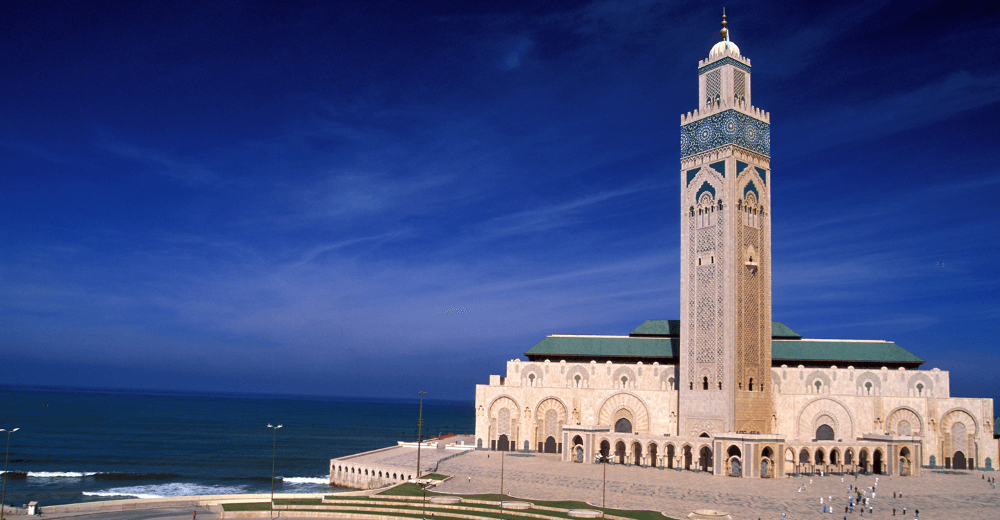
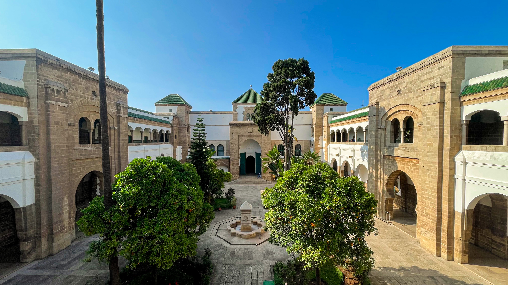
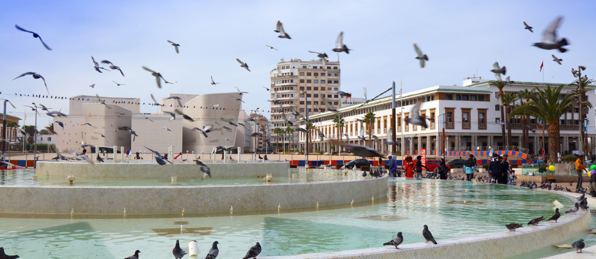

Lieux Incontournables
Explorez les merveilles emblématiques de Casablanca.

Mosquée Hassan II
L'un des plus grands et des plus beaux édifices religieux au monde. Érigée en partie sur les flots de l'océan Atlantique, elle possède un minaret culminant à 210 mètres (le deuxième plus haut du monde). Un chef-d'œuvre absolu de l'artisanat marocain, de la sculpture sur bois au zellige, ouvert aux visites non-musulmanes.
Localiser
Le Quartier des Habous
Surnommé la "nouvelle médina", ce quartier a été construit dans les années 1920 par les Français. C'est un modèle d'urbanisme mêlant règles hygiénistes modernes et architecture traditionnelle marocaine. On y trouve de magnifiques arcades, la célèbre Mahkama du Pacha et de nombreux artisans (cuivre, tapis, pâtisseries).
Localiser
Place Mohammed V (Art Déco)
Le cœur administratif de la ville et le joyau de l'architecture Art Déco casablancaise. La place est ceinturée de bâtiments grandioses des années 1930 : la Wilaya (Préfecture), le Palais de Justice, la Grande Poste et le Consulat de France, le tout entourant une grande fontaine lumineuse.
Localiser.jpg)
La Corniche d'Ain Diab
Le lieu de détente favori des Casablancais. Ce long boulevard qui longe l'océan Atlantique est bordé de plages, de beach clubs exclusifs, de cinémas, de cafés branchés et de discothèques. Au coucher du soleil, la promenade y est particulièrement majestueuse avec la brise marine.
Localiser
.jpg)